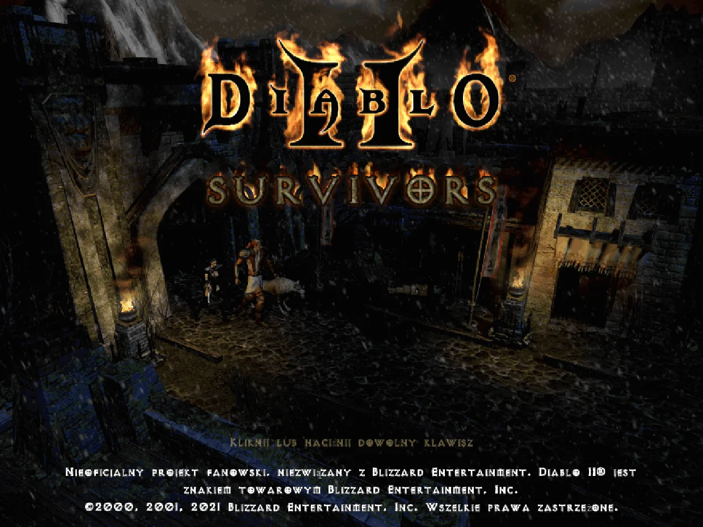
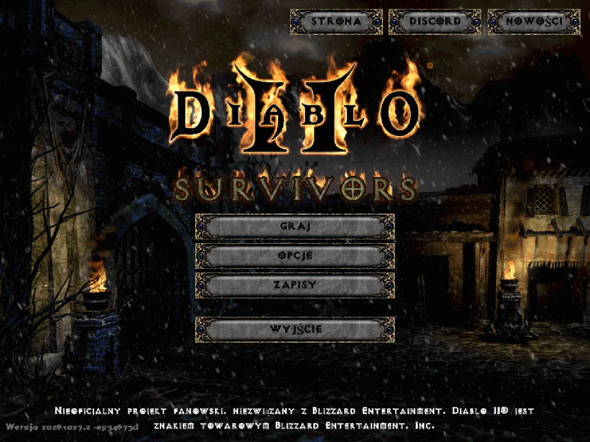
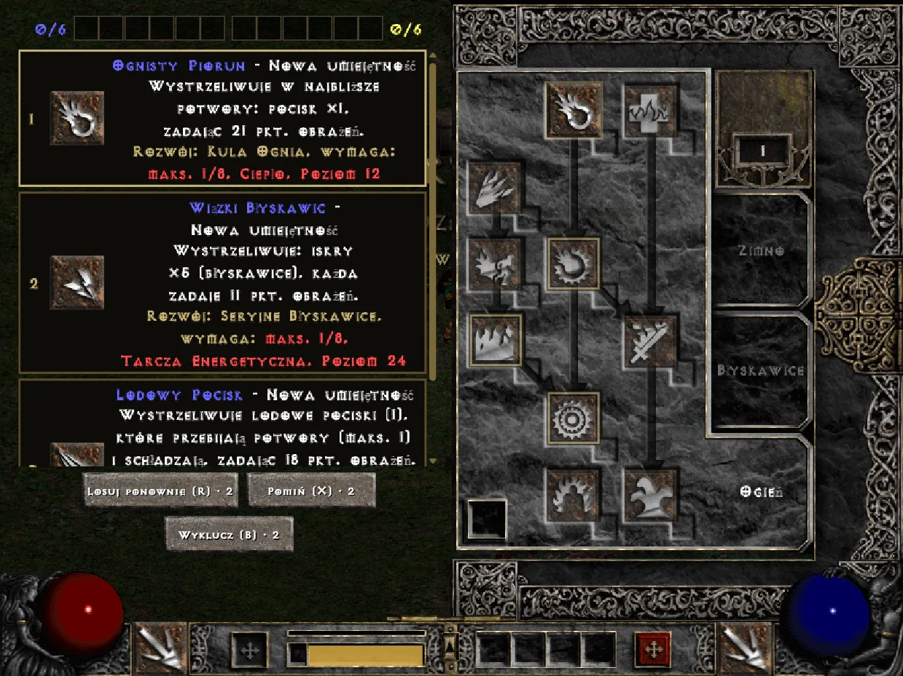
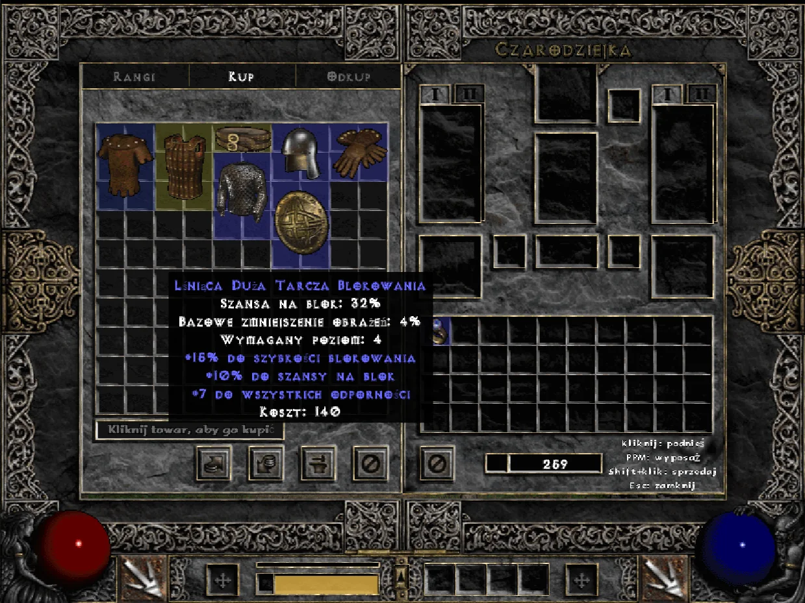
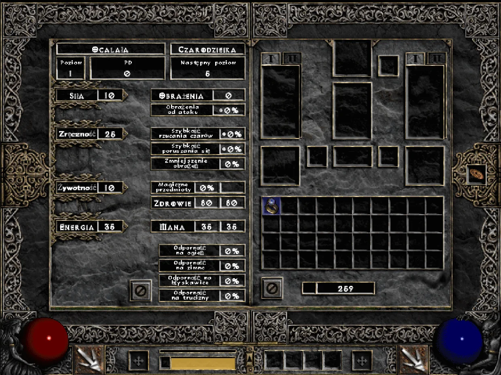
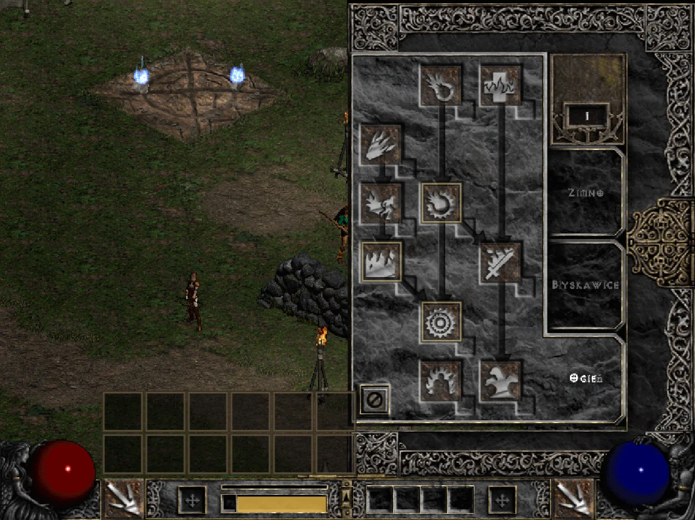
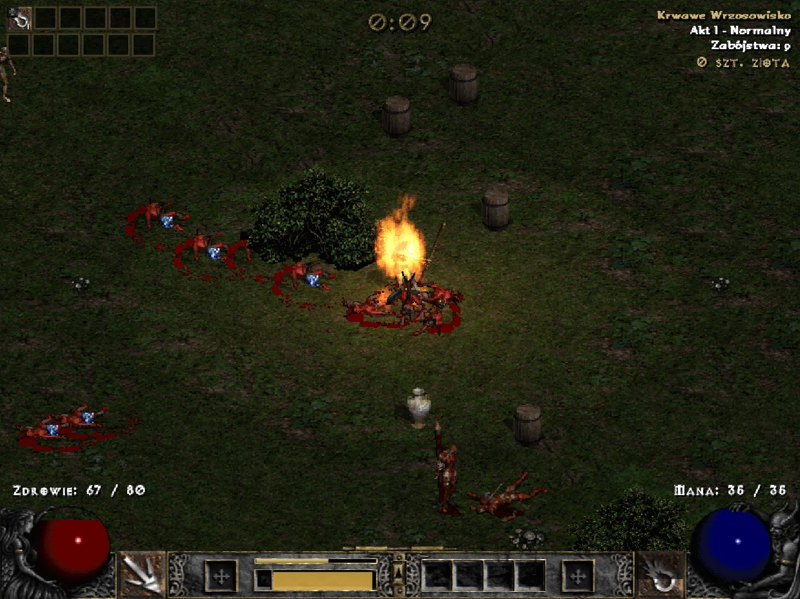
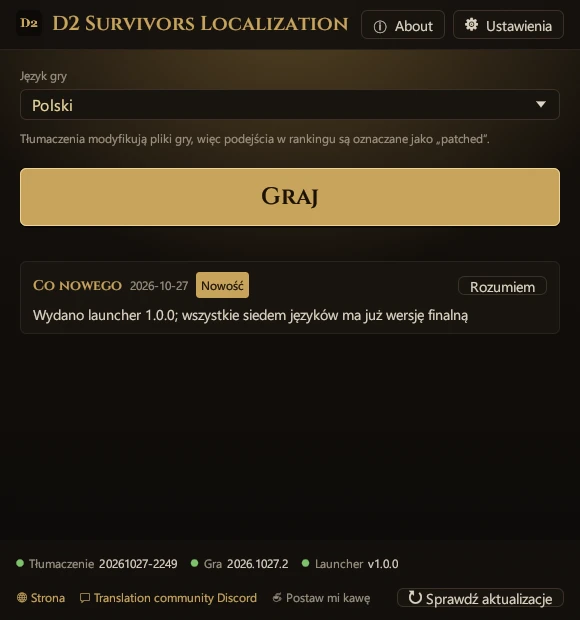
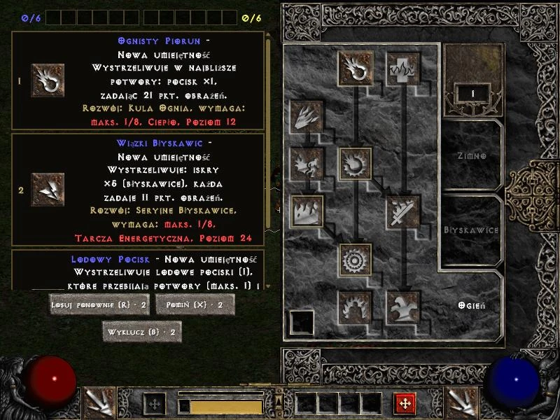
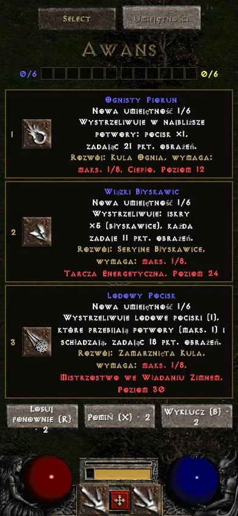

D2 Survivors
Autor: framara
Darmowa, nieoficjalna gra fanowska w stylu survivors-like osadzona w świecie Diablo II. Ten projekt tłumaczenia nie jest powiązany z autorem gry; problemy z samą grą zgłaszaj oficjalnymi kanałami.
Nieoficjalny projekt fanowski
Wybierz wersję
Zagraj w Diablo 2 Survivors po polsku. To darmowy projekt fanowski: spolszczenie tłumaczy samą grę, a nie tylko poradnik: interfejs, umiejętności, przedmioty, potwory i karty awansu, z oficjalnymi nazwami z Diablo II: Resurrected. Launcher instaluje, aktualizuje i przywraca oryginał jednym kliknięciem.
Zagraj w Diablo 2 Survivors w swoim języku. To tłumaczenie samej gry, a nie poradnik: w przeglądarce jedno kliknięcie zakładki przełącza grę na chiński (tradycyjny), chiński (uproszczony), japoński, niemiecki, francuski, rosyjski lub polski, z oficjalnymi nazwami z Diablo II: Resurrected. Nic nie trzeba instalować, działa na PC i telefonie.










Ekrany gry: D2 Survivors (framara), na własnych plikach Diablo II gracza
Ten projekt zawiera wyłącznie tłumaczenie, bez plików gry. Zanim zaczniesz, pobierz D2 Survivors i Diablo II z oficjalnych źródeł poniżej.
Autor: framara
Darmowa, nieoficjalna gra fanowska w stylu survivors-like osadzona w świecie Diablo II. Ten projekt tłumaczenia nie jest powiązany z autorem gry; problemy z samą grą zgłaszaj oficjalnymi kanałami.
Blizzard Entertainment
D2 Survivors korzysta z grafiki i dźwięków Diablo II z twojego komputera, więc potrzebujesz własnej kopii Diablo II: Resurrected albo Diablo II + Lord of Destruction (patch 1.14).
Nazewnictwo: nazwy umiejętności, przedmiotów, potworów i krain pochodzą z oficjalnego tłumaczenia Diablo II: Resurrected; resztę przetłumaczył ten projekt.
Gotowe i wydane: chiński (tradycyjny), chiński (uproszczony), japoński, niemiecki, francuski, rosyjski i polski.
Aktualizacje tłumaczeń, języków i launchera. Launcher i zakładka za każdym razem pobierają najnowsze tłumaczenie — nic nie trzeba pobierać ponownie.
Nie musisz ręcznie zmieniać plików gry — wszystko robi launcher. Najpierw zamknij grę. Launcher wyświetla się w języku, który wybierzesz.
Pobierz wersję na komputer z oficjalnej strony D2 Survivors, wskaż w ustawieniach folder z Diablo II i sprawdź, czy gra się uruchamia.
Pobierz d2s-launcher.exe i umieść go w dowolnym folderze. Instalacja nie jest potrzebna.
Przy pierwszym uruchomieniu zobaczysz ekran ze wszystkimi językami, każdy zapisany we własnym języku. Kliknij swój, a potem „→” — launcher i tłumaczenie gry będą w tym języku.
① „Gra”: launcher znajduje D2 Survivors (domyślnie w %LOCALAPPDATA%\Programs\D2 Survivors; jeśli gra jest gdzie indziej — „Wybierz folder…”). ② „Diablo II”: szuka twojego Diablo II: Resurrected lub klasycznego Diablo II; jeśli go nie znajdzie, możesz kliknąć „Pomiń”. ③ „Gotowe”: jeśli chcesz, kliknij „Utwórz skrót na pulpicie”, a potem „Graj”. Za pierwszym razem pobierze się tłumaczenie, a oryginalny app.asar zostanie zapisany jako kopia zapasowa.
Domyślnie każde uruchomienie pobiera najnowsze tłumaczenie („Aktualizuj tłumaczenia przy uruchomieniu” w „Ustawieniach”), a po aktualizacji gry zostaje ono automatycznie zastosowane ponownie. Język zmienisz w głównym oknie, w polu „Język gry”.
app.asar wróci na miejsce.%LOCALAPPDATA%\D2SurvivorsLauncher.Aby zrobić własny skrót, ustaw tę linię jako jego element docelowy — gra uruchomi się w wybranym języku bez okna launchera. (Skrót z „Utwórz skrót na pulpicie” otwiera okno i od razu uruchamia grę.)
d2s-launcher.exe --launch --lang pl--launch--play--lang <id>--no-update--update--restore--self-update--statusGrasz w przeglądarce na d2survivors.lol? Jedna zakładka przełącza grę na chiński (tradycyjny), chiński (uproszczony), japoński, niemiecki, francuski, rosyjski lub polski, z tym samym tłumaczeniem co w launcherze. Nic nie trzeba instalować, działa na PC i telefonie.
D2 Polski ← przeciągnij na pasek zakładek
javascript:import('https://cycleapple.github.io/d2survivors-localization/web/d2zh.js').then(m=>m.default('pl')).catch(e=>alert('D2 Survivors Localization: '+e))Stuknij „Kopiuj kod zakładki” powyżej.
Otwórz tę stronę w Safari, stuknij Udostępnij, wybierz „Dodaj zakładkę” i zachowaj.
W nowszym iOS Udostępnij jest w menu „⋯”.
Otwórz zakładki, stuknij „Edytuj”, a potem nową zakładkę.
W nowszym iOS zakładki są w menu „⋯”.
Nazwij ją „D2 Polski”, zastąp cały adres kodem i stuknij „Gotowe”.
Otwórz stronę główną d2survivors.lol i stuknij „D2 Polski” w zakładkach.
Strona główna zużywa mniej pamięci i szybciej się ładuje — szczególnie polecane na telefonie. Na stronie gry (/play/) też działa.
Stuknij „Kopiuj kod zakładki” powyżej.
Otwórz tę stronę w Chrome, stuknij ⋮, a potem ☆ w górnym rzędzie.
Stuknij ⋮ → „Zakładki”, potem ⋮ przy nowej zakładce → „Edytuj”.
Nazwij ją „D2 Polski”, zastąp cały URL kodem i stuknij ←, żeby zapisać.
Na stronie głównej d2survivors.lol wpisz „D2 Polski” w pasku adresu i stuknij podpowiedź z ☆.
Z listy zakładek się nie uruchamia. Strona główna zużywa mniej pamięci i szybciej się ładuje; na stronie gry (/play/) też działa.
Ekrany są poglądowe; nazwy i położenie przycisków mogą się nieco różnić w zależności od wersji systemu.
Nie. To nieoficjalne tłumaczenie fanowskie, niezwiązane z twórcami D2 Survivors ani z Blizzard Entertainment.
Kod — tak. Źródła launchera, zakładki, tej strony i narzędzi są na GitHubie na licencji MIT. Launcher jest budowany automatycznie z tych publicznych źródeł przez GitHub Actions (historia kompilacji), a do każdego wydania dołączony jest d2s-launcher.exe.sha256, więc możesz go sprawdzić samodzielnie.
Dane tłumaczenia (słowniki) nie mają jeszcze otwartej licencji — wszelkie prawa zastrzeżone, zob. dict/LICENSE. Zawarte w nich oficjalne nazwy należą do Blizzard Entertainment.
Jest gotowa: wszystko jest przetłumaczone i sprawdzone w grze pod kątem pominięć. Potem cały interfejs i 300 losowych wpisów przeczytano jeszcze raz niezależnie, co dało około 480 poprawek w całym słowniku. Nazwy przedmiotów magicznych i rzadkich są składane zgodnie z rodzajem gramatycznym, np. „Masywne Rękawice Lisa”, „Bestialskie Ostrze”, „Karmazynowy Kaptur Energii”, a bohaterki noszą żeńskie tytuły. Około 67% nazewnictwa pochodzi wprost z oficjalnego polskiego tłumaczenia Diablo II: Resurrected. Polskie litery (ą, ć, ę, ł, ń, ś, ź, ż) w wersji na komputer rysowane są czcionkami z D2R — Exocet w nagłówkach i Formal436 w tekście — w tym samym rozmiarze co reszta liter; wersja przeglądarkowa używa czcionek systemowych.
Jeśli zauważysz błąd, daj nam znać.
Tak. Launcher jest na razie tylko na Windows; na Macu, Linuksie i telefonie graj w wersję przeglądarkową i użyj zakładki z karty „W przeglądarce”.
Nie. Launcher podmienia tylko resources\app.asar w folderze gry, wcześniej robiąc kopię oryginału. Zapisy leżą gdzie indziej i nie są ani czytane, ani zmieniane.
Nie. Zapisy jak zwykle zostają w przeglądarce. Zakładka podmienia tylko tekst gry na otwartej stronie i niczego po sobie nie zostawia; odświeżenie przywraca oryginał.
Aktualizacja podmienia app.asar, więc tłumaczenie znika, dopóki znów nie uruchomisz gry przez launcher lub skrót — wtedy zostanie zastosowane ponownie.
Jeśli nowa wersja zmieniła się zbyt mocno, launcher niczego nie wymusza: uruchamia oryginalną grę i informuje, że tłumaczenie jest poprawiane. Gdy będzie gotowe, przy następnym uruchomieniu zastosuje się samo — nic nie musisz robić.
Zakładka za każdym razem sprawdza, czy jej reguły pasują do nowej wersji. Jeśli nie, informuje, że tłumaczenie wymaga aktualizacji, i nie startuje; oryginalna gra pozostaje nietknięta. Do czasu aktualizacji graj po angielsku.
Tłumaczenie zajmuje wbudowane w grę miejsce języka koreańskiego, więc w menu w tym miejscu widać nazwę wybranego języka. Aby grać po koreańsku, wybierz w launcherze „한국어 (원본)”.
Android Chrome nie uruchamia zakładek z listy zakładek: wpisz nazwę „D2 Polski” w pasku adresu i dotknij zakładki w podpowiedziach. Na iPhonie otwórz zakładki Safari na stronie głównej lub na stronie gry i dotknij jej tam.
Sprawdź też, czy cały adres zakładki został zastąpiony kodem zaczynającym się od javascript:.
Zwykle telefonowi brakuje pamięci i przeglądarka ładuje kartę od nowa. Co pomaga:
Po odświeżeniu użyj zakładki ponownie, aby grać dalej; postęp będzie taki, jak zapisała go sama gra.
Nie. Z ekranu początkowego gra otwiera się na pełnym ekranie, bez paska adresu i bez zakładek do stuknięcia, a tłumaczenie się nie zachowuje: po odświeżeniu lub ponownym otwarciu wraca oryginał. Graj w karcie Safari lub Chrome i stukaj zakładkę ponownie po każdym otwarciu lub odświeżeniu.
Cały tekst gry jest przetłumaczony i sprawdzony w grze pod kątem pominięć. Jeśli widzisz angielski, najpewniej aktualizacja gry dodała nowy tekst; tłumaczenie uzupełni go w jednej z kolejnych aktualizacji, a launcher pobierze ją automatycznie. Jeśli tekst wciąż jest po angielsku, daj nam znać.
Cały tekst gry jest przetłumaczony i sprawdzony w grze pod kątem pominięć. Jeśli widzisz angielski, najpewniej aktualizacja gry dodała nowy tekst; tłumaczenie uzupełni go w jednej z kolejnych aktualizacji, a zakładka zawsze wczytuje najnowsze tłumaczenie. Jeśli tekst wciąż jest po angielsku, daj nam znać.
Launcher nie ma podpisu cyfrowego (certyfikat kosztuje co roku), więc Windows SmartScreen ostrzega, dopóki nie pobierze go wystarczająco dużo osób.
Nie jest podpisany, ale kod źródłowy i proces kompilacji launchera są publiczne.
Kliknij „Więcej informacji”, a potem „Uruchom mimo to” — Windows nie zapyta ponownie. Pobieraj launcher tylko z tej strony lub z GitHub Releases. Każde wydanie zawiera d2s-launcher.exe.sha256, który możesz sprawdzić poleceniem certutil -hashfile d2s-launcher.exe SHA256.
Jeśli przeglądarka napisze, że plik jest rzadko pobierany, wybierz w menu pobierania „Zachowaj”.
Nie. Sama gra pozwala w nazwach postaci tylko na angielskie litery (bez ą, ę, ł…) i koreański.
Literówki, nieprzetłumaczone teksty i problemy z zakładką lub launcherem zgłaszaj na Discordzie społeczności tłumaczy, gdzie publikujemy też nowości.
Błędy tłumaczenia i programu możesz też zgłaszać w GitHub Issues.
Problemy z samą grą (niezwiązane z tłumaczeniem) zgłaszaj na oficjalnym Discordzie D2 Survivors (po angielsku).
Chętnie! Wszystkie języki są już wydane, ale tłumaczenie zawsze można poprawić. Jeśli zauważysz niezgrabne sformułowanie lub literówkę, zwłaszcza w swoim ojczystym języku, daj nam znać. Napisz do nas tutaj.